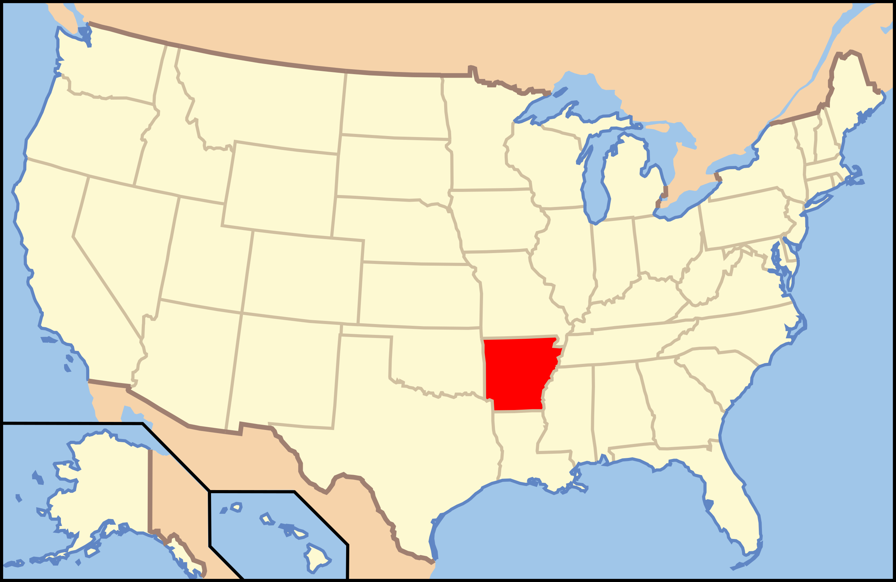

Arkansas

1. Seven Hollows - Petit Jean State Park

Granger Meadow/Flickr
| Grade: Moderate |
|---|
| More Images |
| Trail Link |
2. Yellow Rock - Devil's Den State Park

Jonathan Ball/Flickr
| Grade: Moderate |
|---|
| More Images |
| Trail Link |
3. Hemmed-in-Hollow - Buffalo National River

David Nichols/Flickr
| Grade: Moderate |
|---|
| More Images |
| Trail Link |